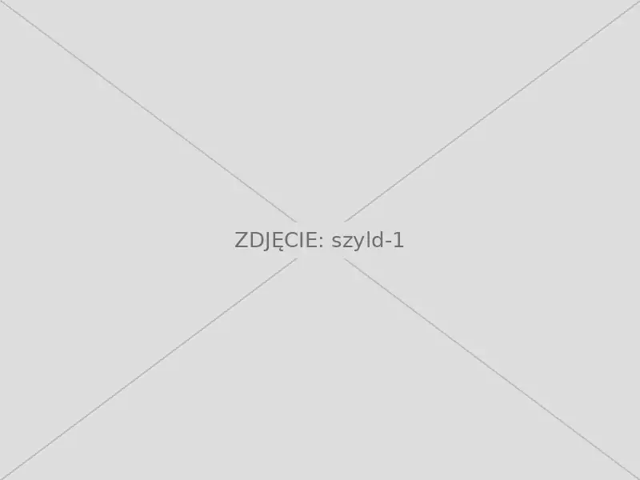
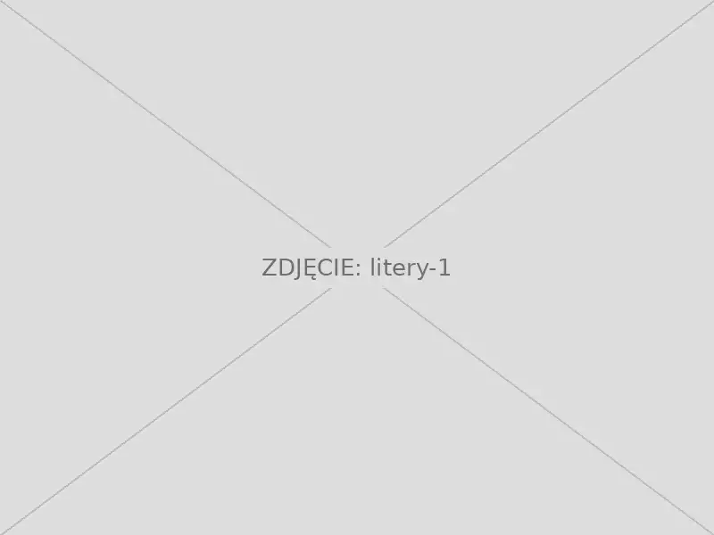
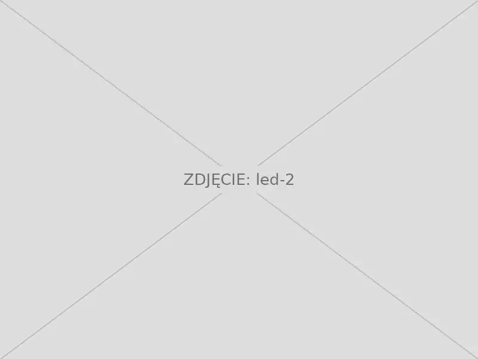

Reklama zewnętrzna · Gdynia
Szyldy reklamowe w Gdyni
Szyldy reklamowe w Gdyni wykonujemy dla sklepów, lokali usługowych, gabinetów, restauracji i biur, które chcą być lepiej widoczne z ulicy. Robimy szyldy z kasetonów, litery przestrzenne na elewację i litery do wnętrz – podświetlane LED albo bez podświetlenia, od projektu po montaż. Wystarczy przesłać zdjęcie elewacji, a przygotujemy propozycję i wycenę.
- [UZUPEŁNIJ]latdoświadczenia
- [UZUPEŁNIJ]+wykonanych szyldów
- 3kasetony · litery 3D · do wnętrz
- 1zdjęciewystarczy do wyceny
Dla kogo
Szyldy reklamowe Gdynia – co robimy i dla kogo
Jesteśmy agencją reklamy zewnętrznej z Gdyni. Skupiamy się na trzech rzeczach: szyldach z kasetonów, literach przestrzennych na elewację i literach do wnętrz. Pracujemy z małymi i średnimi firmami, które potrzebują jednego szyldu nad wejściem, a także z tymi, które oznakowują kilka lokali.
Najczęściej zgłaszają się do nas:
- Sklepy i punkty usługoweOtwierają nowy lokal lub zmieniają wizerunek.→
- Restauracje, kawiarnie i baryZależy im na widoczności także po zmroku.→
- Gabinety, salony i biuraPotrzebują estetycznego, czytelnego szyldu lub tablicy.→
- Firmy w biurowcach i pawilonachMuszą dopasować reklamę do zasad wspólnoty lub zarządcy budynku.→
Doświadczenie: [UZUPEŁNIJ: od kiedy działacie / ile szyldów wykonaliście – tylko prawdziwe dane].
Oferta
Kasetony, litery przestrzenne i litery do wnętrz
Kasetony reklamowe wykonujemy z podświetleniem LED. Litery przestrzenne 3D i logo do środka – w wersji podświetlanej, gdy firma ma być widoczna po zmroku, albo bez podświetlenia, gdy działa głównie w dzień lub budynek jest dobrze oświetlony.
Kaseton reklamowy
- Wykończeniefrezowanie wklęsłe lub wypukłe
- PodświetlenieLED w środku – równe światło po zmroku
- Przykładowa cena250 × 50 cm, frezowanie wklęsłe – 4500 zł [UZUPEŁNIJ: netto/brutto]
- Montażod 1000 zł – zależnie od miejsca montażu
Dużo miejsca na logo i nazwę, dobra widoczność z daleka – sklepy, punkty usługowe, lokale przy ulicy.
Wyceń – Kaseton reklamowyLitery przestrzenne 3D
- Co tolitery i logo 3D na fasadę, nad wejście lub nad witrynę
- Podświetlaneświatło w przód, na elewację (halo) lub z boków
- Bez podświetleniaaluminium, stal lub plexi na dystansach
- Przykładowa cenanapis 250 × 30 cm, 6 liter – od 6800 zł [UZUPEŁNIJ: netto/brutto]
- Montażod 1000 zł – zależnie od miejsca montażu
Elegancki napis, który nie zasłania architektury – restauracje, salony, gabinety, biura.
Wyceń – Litery przestrzenne 3DLogo do środka
- Co tologo za ladą, na recepcji, w biurze i sali konferencyjnej
- Podświetlanesubtelna poświata na ścianę (halo)
- Bez podświetleniaplexi, PCV lub metal, montaż na ścianie
- Cenaod 4800 zł – zależnie od rodzaju i wykończenia [UZUPEŁNIJ: netto/brutto]
Pierwsze, co klient widzi po wejściu – recepcje, gabinety, biura, salony.
Wyceń – Logo do środka
Montaż: [UZUPEŁNIJ: czy montujecie sami, czy przez partnera, i czy pomagacie przy zgodach od zarządcy budynku].
Katalog
Katalog: litery metalowe, litery do środka i neony LED
Nie wiesz, od czego zacząć? Wybierz kierunek z katalogu – dopasujemy wielkość, kolor i podświetlenie do Twojego logo i miejsca montażu.
Litery metalowe
- Materiałaluminium lub stal nierdzewna
- Wersjebez podświetlenia lub ze światłem na elewację
Prestiżowy, trwały napis na fasadę – dobrze znosi nadmorską pogodę.
Wyceń – Litery metaloweLitery do środka
- Materiałplexi, PCV spienione, dibond lub metal
- Wersjez podświetleniem halo lub bez
Logo na recepcję, do biura i lokalu – lżejsze i tańsze niż litery na elewację.
Wyceń – Litery do środkaNeony LED
- Materiałelastyczny neon LED na plexi
- Zastosowanienapisy, logo i hasła w lokalu i witrynie
Efekt klasycznego neonu przy niskim zużyciu prądu – kawiarnie, bary, salony.
Wyceń – Neony LED
[UZUPEŁNIJ: zdjęcia wzorów z katalogu – po kilka przykładów w każdej kategorii]
Realizacje
Realizacje i opinie klientów
Najlepiej ocenić naszą pracę po efektach. Poniżej pokazujemy kasetony, litery przestrzenne i litery do wnętrz wykonane dla firm z Gdyni i okolic.





Opinie klientów: [UZUPEŁNIJ: prawdziwe opinie, np. z wizytówki Google, z imieniem lub nazwą firmy za zgodą klienta].
Wycena ze zdjęcia
Jak wygląda współpraca krok po kroku
Wyślij zdjęcie elewacji przez formularz obok – resztę bierzemy na siebie. Tak wygląda droga od zdjęcia do gotowego szyldu.
- Zapytanie – wysyłasz zdjęcie elewacji lub miejsca na szyld, przybliżone wymiary i logo (jeśli je masz).
- Konsultacja i propozycja – doradzamy: kaseton czy litery, jaki materiał, z podświetleniem czy bez – a potem przygotowujemy wycenę.
- Projekt i wizualizacja – pokazujemy, jak szyld będzie wyglądał na Twoim budynku. Poprawki wprowadzamy przed produkcją.
- Produkcja – po akceptacji projektu wykonujemy szyld. Czas realizacji: [UZUPEŁNIJ: typowy czas wykonania].
- Montaż i odbiór – [UZUPEŁNIJ: jak wygląda montaż i odbiór u Was].
Co przesyłasz:
- zdjęcie elewacji zrobione na wprost – wystarczy z telefonu,
- telefon lub e-mail, żebyśmy mogli odpowiedzieć,
- opcjonalnie: przybliżone wymiary (jeśli ich nie znasz, zmierzysz je na zdjęciu w formularzu) i logo.
Co dostajesz:
- wycenę, w której wypisujemy, co obejmuje oferta – dodatkowe pozycje zaznaczamy osobno,
- propozycję 1–2 wariantów w różnych cenach, np. z podświetleniem i bez,
- wizualizację szyldu na zdjęciu Twojego budynku przed produkcją [UZUPEŁNIJ: czy wizualizacja jest bezpłatna],
- odpowiedź w ciągu [UZUPEŁNIJ: czas odpowiedzi, np. 1 dnia roboczego].
Jeśli nie masz jeszcze logo ani pomysłu na wygląd szyldu, napisz o tym w zapytaniu. [UZUPEŁNIJ: czy oferujecie projekt graficzny od zera].
Wyślij zdjęcie do wyceny
Przepisy
Uchwała krajobrazowa Gdyni – co sprawdzić przed montażem szyldu
W Gdyni obowiązuje uchwała krajobrazowa – uchwała nr LV/1678/23 Rady Miasta Gdyni, opublikowana w Dzienniku Urzędowym Województwa Pomorskiego z 27 września 2023 r., poz. 4324. Określa zasady umieszczania tablic i urządzeń reklamowych, w tym szyldów: ich wymiary, miejsce na budynku, materiały i standardy jakości.
- Wymiary i miejsce – szyld, kaseton czy litery przestrzenne trzeba dopasować do zasad uchwały, zanim trafią do produkcji.
- Liczba szyldów – ustawa krajobrazowa pozwala gminie określić także, ile szyldów może wisieć na jednym budynku.
- Zgoda zarządcy – niezależnie od uchwały na montaż na elewacji zwykle potrzebna jest zgoda właściciela, wspólnoty lub zarządcy budynku.
- Aktualny tekst – część zapisów uchwały była zaskarżana w sądzie, dlatego przed zamówieniem warto sprawdzić jej obecne brzmienie w Urzędzie Miasta Gdyni.
To ogólne wskazówki, nie porada prawna. [UZUPEŁNIJ: czy pomagacie dopasować projekt do uchwały i przygotować wizualizację do urzędu lub wspólnoty].
Gdzie działamy
Szyldy reklamowe w Gdyni i okolicy – obszar działania i kontakt
Działamy w Gdyni we wszystkich dzielnicach, od Śródmieścia, przez Redłowo i Orłowo, po Chylonię i Obłuże. [UZUPEŁNIJ: czy obsługujecie też Sopot, Gdańsk, Rumię, Redę, Wejherowo i resztę Pomorza].

- Telefon[UZUPEŁNIJ: numer telefonu]
- E-mail[UZUPEŁNIJ: adres e-mail]
- Adres[UZUPEŁNIJ: ulica i numer], [UZUPEŁNIJ: kod pocztowy] Gdynia
- Godziny pracypn–pt: [UZUPEŁNIJ: godziny], sobota: [UZUPEŁNIJ: godziny lub „nieczynne”], niedziela: nieczynne
Najszybciej przygotujemy wycenę, jeśli przez formularz wyceny prześlesz zdjęcie miejsca montażu i przybliżone wymiary.
FAQ
Pytania i odpowiedzi
Ile kosztuje szyld reklamowy w Gdyni?
Cena zależy od rodzaju (kaseton, litery przestrzenne, litery do wnętrz), wymiarów, materiału, podświetlenia i sposobu montażu, dlatego każdy szyld wyceniamy indywidualnie. Przykładowo kaseton reklamowy 250 × 50 cm z frezowaniem wklęsłym kosztuje 4500 zł [UZUPEŁNIJ: netto/brutto], napis z liter przestrzennych 250 × 30 cm (6 liter) od 6800 zł, a logo do środka od 4800 zł – zależnie od rodzaju i wykończenia. Montaż kosztuje od 1000 zł – zależnie od miejsca montażu. Dokładną wycenę przygotujemy po otrzymaniu zdjęcia elewacji i wymiarów.
Jak długo trwa wykonanie szyldu?
Czas realizacji zależy od rodzaju reklamy i obłożenia produkcji. Szyld bez podświetlenia zwykle powstaje szybciej niż kaseton czy litery przestrzenne z podświetleniem LED. U nas typowy czas to [UZUPEŁNIJ: liczba dni roboczych od akceptacji projektu].
Czy zajmujecie się też montażem szyldu?
[UZUPEŁNIJ: czy montaż wykonujecie sami, czy przez partnera, i na jakim obszarze]. Przed montażem warto sprawdzić, czy wspólnota, zarządca budynku lub urząd nie wymagają zgody na umieszczenie reklamy. Gdynia ma też uchwałę krajobrazową, która może określać zasady dla szyldów.
Podświetlany czy bez podświetlenia – co wybrać?
Podświetlenie LED warto wybrać, jeśli lokal działa po zmroku, stoi przy ruchliwej ulicy albo konkuruje z innymi reklamami. Wersja bez podświetlenia wystarczy, gdy firma działa głównie w dzień lub budynek jest dobrze oświetlony – jest też tańsza. W wycenie możemy pokazać oba warianty.
Czy dajecie gwarancję na szyldy i podświetlenie LED?
[UZUPEŁNIJ: okres i zakres gwarancji na szyldy oraz osobno na elementy LED i zasilacze]. W razie usterki wystarczy się z nami skontaktować, a ustalimy termin naprawy.
Nie mam logo ani projektu – czy możecie pomóc?
Tak, wystarczy, że opiszesz swoją firmę i pokażesz zdjęcie miejsca na szyld. [UZUPEŁNIJ: czy przygotowujecie projekt graficzny od zera i czy jest wliczony w cenę]. Przed produkcją zawsze dostaniesz wizualizację do akceptacji.
Wyślij zdjęcie – albo zadzwoń
Zapytaj o wycenę
Wyślij nam zdjęcie elewacji i przybliżone wymiary, a przygotujemy propozycję i wycenę szyldu dla Twojej firmy w Gdyni.